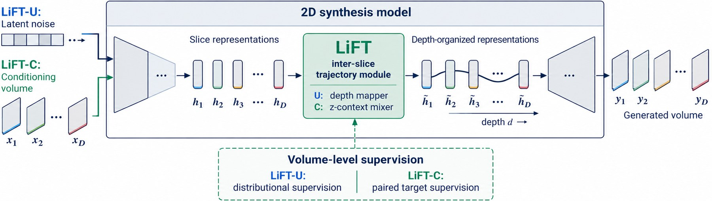
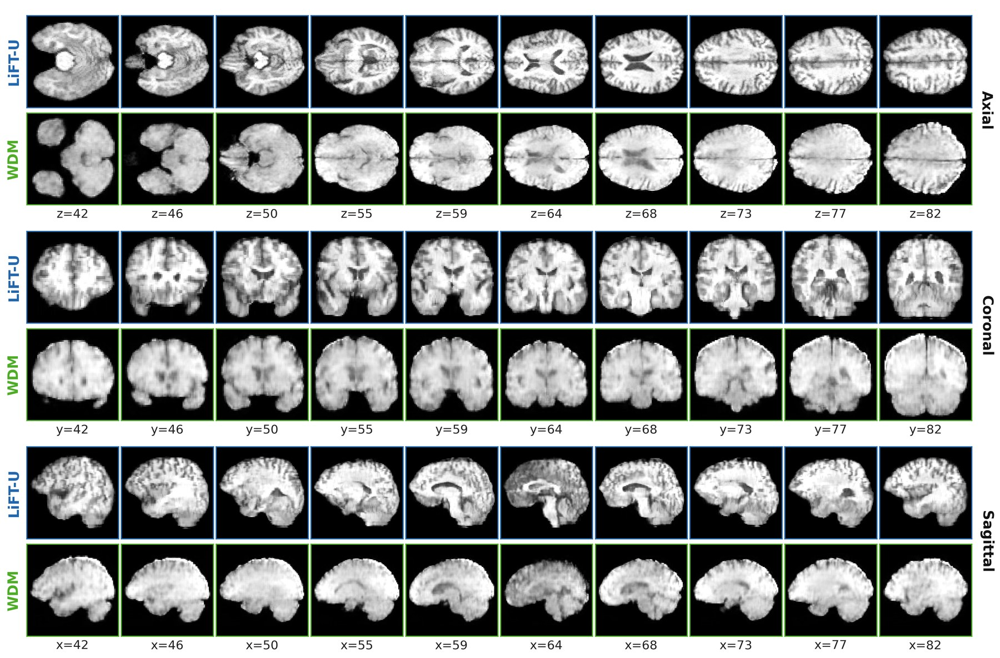
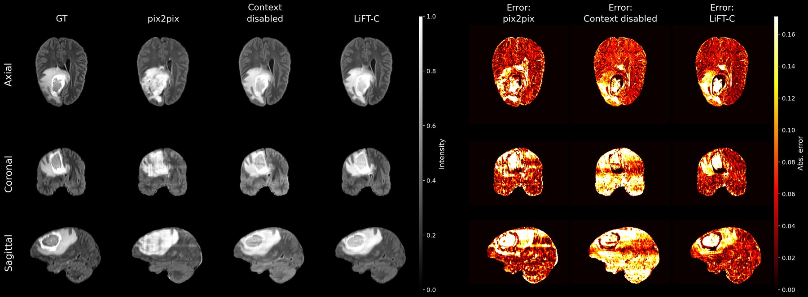

NeurIPS 2026
1Harvard SEAS 2CAMCA, MGH & Harvard Medical School 3Kempner Institute, Harvard
*Equal supervision
High-resolution 3D medical image generation remains challenging because fully volumetric models are computationally expensive, while efficient 2D slice generators often fail to preserve anatomical consistency across the third dimension. We propose LiFT, a framework for Lifted inter-slice Feature Trajectories that factorizes 3D volume synthesis into per-slice image generation and inter-slice trajectory learning. Rather than using a fully volumetric synthesis backbone, LiFT treats a volume as an ordered trajectory in feature space, capturing how anatomical structures appear, transform, and disappear across depth. We demonstrate the LiFT framework in both unconditional and conditional settings. In unconditional generation, a tri-planar drifting loss matches feature distributions between generated and real volumes across three orthogonal planes; in paired translation, a bidirectional z-context mixer trained with paired target supervision supplies through-plane coherence while preserving per-slice fidelity. We evaluate LiFT on BraTS 2023 for unconditional and missing-modality MR synthesis, and on SynthRAD2023 for MR-to-CT translation. LiFT achieves competitive image quality while retaining the efficiency of predominantly 2D synthesis, operating up to 390× faster than a volumetric diffusion baseline and consistently improving through-plane coherence through explicit inter-slice modeling. These results establish lightweight inter-slice trajectory learning as an efficient approach to high-resolution 3D medical synthesis.

A depth mapper maps a global latent ξ and a Fourier depth encoding γ(d) to a conditioning code cd for each slice of a frozen 2D generator. The tri-planar drifting loss pulls features of generated axial, coronal, and sagittal slices toward the real-volume feature bank, so no paired target is needed.
A bidirectional GRU runs along depth at every location of a 2D encoder–decoder’s spatial bottleneck and returns its context through a zero-initialized residual. Encoder, decoder, and skip connections stay two-dimensional; training uses the registered target volume.

| Method | FID ×103 ↓ | Params (M) ↓ | Time / vol. (s) ↓ |
|---|---|---|---|
| WDM | 0.154 | 57.9 | 26.92 |
| MAISI-v2 | 0.294 | 201.4 | 0.506 |
| 3D MedDiffusion | 0.043 | 166.3 | 15.37 |
| LiFT-U | 0.066 | 30.3 | 0.039 |

| Method | Avg. PSNR ↑ | Avg. SSIM ↑ | Params (M) ↓ | Time / vol. (s) ↓ |
|---|---|---|---|---|
| pix2pix | 26.351 | 0.9345 | 54.4 | 0.053 |
| Fast-cWDM | 28.233 | 0.9456 | 81.5 | 15.54 |
| cWDM | 28.425 | 0.9525 | 81.5 | 154.8 |
| LiFT-C | 28.417 | 0.9528 | 41.3 | 1.166 |
| Method | Δz MAE full ↓ | Δz MAE bone ↓ | Δz MAE air ↓ | Δz corr. ↑ |
|---|---|---|---|---|
| Pix2pix-UNet | 52.20 | 180.23 | 199.71 | 0.575 |
| Pix2pix-ResNet | 44.91 | 159.54 | 186.91 | 0.650 |
| CBAM3D-UNet | 39.88 | 141.10 | 142.37 | 0.713 |
| Context disabled | 42.73 | 151.73 | 172.21 | 0.675 |
| LiFT-C | 38.369 | 134.968 | 149.722 | 0.729 |
@inproceedings{zhang2026lift,
title = {Efficient Factorized Volume Synthesis with Lifted Inter-Slice Feature Trajectories},
author = {Zhang, Xinhe and Zhang, Yuyang and Jin, Pengfei and Marin-Llobet, Arnau and Li, Na and Li, Quanzheng},
booktitle = {Advances in Neural Information Processing Systems},
year = {2026}
}